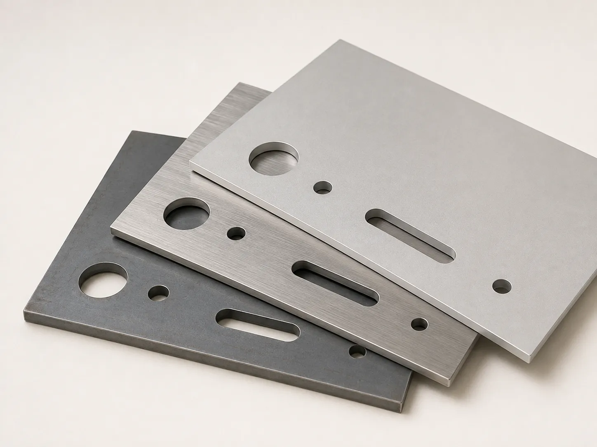
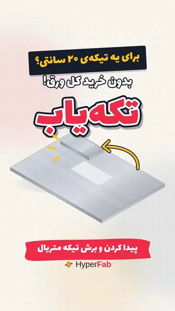

تکهیاب هایپرفب
خرید تکهی متریال صنعتی، به اندازهی نیاز
به یک تکه ورق آلومینیوم، چند سانت میلگرد استیل یا یک شفت برنجی نیاز دارید و بازار فقط شاخهی کامل یا ورق درسته میفروشد؟ مشخصات تکه را در فرم تکهیاب بنویسید؛ هایپرفب پیدایش میکند، قیمت را اعلام میکند و در صورت نیاز به اندازه برش میزند.
- جنسها: آلومینیوم، استیل، فولاد، مس و برنج، پلاستیک مهندسی، فلزات خاص
- شکلها: ورق و صفحه، شفت و میلگرد، تسمه، لوله، پروفیل
- تحویل: پیک در تهران، تحویل حضوری، ارسال به شهرهای دیگر

تکهیاب چیست و چه مشکلی را حل میکند
هر کس قطعهای ساخته یا دستگاهی را تعمیر کرده، این وضع را میشناسد. برای یک بوش برنجی یا یک صفحهی کوچک آلومینیومی باید به چند فروشنده زنگ بزنید. هر کدام فقط شاخهی ششمتری یا ورق کامل میفروشد و قیمت را تلفنی میگوید. آخر هم معلوم نیست جنس همان گرید درخواستی باشد. خرید تکهی کوچک متریال صنعتی معمولاً یعنی تلفن پشت تلفن.
تکهیاب سرویس آنلاین هایپرفب برای همین کار است. مشخصات تکهای را که لازم دارید یک بار در فرم چهارمرحلهای تکهیاب ثبت میکنید: جنس و گرید، شکل، ابعاد، تعداد، زمان نیاز و روش تحویل. اگر لازم باشد، عکس یا توضیح هم پیوست میکنید. تیم هایپرفب از شبکهی تأمینکنندگان استعلام میگیرد و قیمت نهایی را در حساب کاربریتان اعلام میکند. پس از پرداخت، تکه را آماده میکند، در صورت نیاز به اندازه برش میزند و میفرستد.
تکهیاب جدا از خدمات ساخت هایپرفب نیست. اگر تکهی متریال قرار است تراشکاری، فرزکاری CNC، برش لیزر یا خمکاری شود، ساخت قطعه را هم همینجا میسپارید. اینطوری متریال و ساخت یکجا انجام میشود و لازم نیست مواد را بین فروشنده و کارگاه جابهجا کنید.
چه متریالهایی را میشود با تکهیاب خرید
شش خانوادهی متریال؛ اگر گرید یا آلیاژ خاصی لازم دارید، در فرم بنویسید.
آلومینیوم
ورق، صفحه، میلگرد، تسمه و پروفیل آلومینیومی؛ سبک و خوشتراش برای بدنه، صفحهی نصب، فیکسچر و قطعات ماشینکاری.
استیل (فولاد ضدزنگ)
ورق، میلگرد و لولهی استیل برای قطعههایی که با آب، مواد غذایی یا مواد شیمیایی سروکار دارند.
فولاد
میلگرد، شفت، تسمه و ورق فولادی برای شفت، فلنج، براکت و قطعات باربر.
مس و برنج
برنج خوشتراش برای بوش، نازل و اتصالات، و مس برای کاربردهای الکتریکی و حرارتی.
پلاستیک مهندسی
تفلون (PTFE)، پلیاتیلن، پلیاستال (POM)، نایلون و پلکسی؛ برای واشر، بوش، چرخدنده و قطعات لغزشی و عایق.
سایر و فلزات خاص
اگر متریال یا آلیاژ کمیابی لازم دارید، مشخصاتش را بنویسید تا امکان تأمینش بررسی شود.
شکلها و ابعادی که در فرم وارد میکنید
| شکل | ابعادی که لازم است | نمونه |
|---|---|---|
| ورق و صفحه | طول × عرض × ضخامت | صفحهی آلومینیوم ۲۰۰ × ۱۵۰ × ۵ میلیمتر |
| شفت و میلگرد | قطر × طول | میلگرد استیل قطر ۲۰، طول ۳۰۰ میلیمتر |
| تسمه | عرض × ضخامت × طول | تسمهی برنجی ۳۰ × ۵، طول ۵۰۰ میلیمتر |
| لوله | قطر خارجی × ضخامت دیواره × طول | لولهی استیل ۴۲ × ۲، طول ۱ متر |
| پروفیل و سایر | مقطع و طول | نبشی، ناودانی یا قوطی با مقطع دلخواه |
مسیر یک درخواست تکهیاب
ثبت درخواست
فرم چهارمرحلهای را در hyperfab.ir پر میکنید. شمارهی موبایل با کد پیامکی تأیید میشود و حساب کاربریتان خودکار ساخته میشود.
استعلام
تیم تکهیاب از تأمینکنندگان استعلام میگیرد و جنس، گرید و ابعاد را تطبیق میدهد.
اعلام قیمت
قیمت نهایی در حساب کاربری اعلام و با ایمیل یا پیامرسان به شما خبر داده میشود.
پرداخت و آمادهسازی
پس از پرداخت، تکه آماده و در صورت نیاز به اندازه برش میخورد.
ارسال یا تحویل
با پیک در تهران، تحویل حضوری یا ارسال به شهرهای دیگر.
پیگیری درخواست با کد TK
هر درخواست تکهیاب یک کد پیگیری مثل TK1001 میگیرد و در زبانهی «سفارشهای تکهمتریال» حساب کاربری هایپرفب دیده میشود. وضعیت درخواست، از «در حال استعلام» و «قیمت داده شد» تا «پرداخت تأیید شد»، «در حال آمادهسازی»، «ارسال شد» و «تحویل شد»، همانجا بهروز میشود.
اگر متریال درخواستی پیدا نشود، همین را صریح اعلام میکنیم و درخواست بیدلیل معلق نمیماند. سؤالهای تکهیاب را بخش صنعتی هایپرفب در پیامرسان بله (@hyperfab_pro) جواب میدهد.

ویدیوی معرفی تکهیابقیمت تکهی متریال را بدون تلفن پشت تلفن بگیرید.تماشا در آپارات ←تکهیاب به کار چه کسانی میآید
تعمیرکاران ماشینآلات و نگهداری خط تولید که برای ساخت یک قطعهی یدکی، تکهی کوچکی از جنس مشخص لازم دارند.
کارگاههای تراشکاری و ساخت با سفارشهای تک یا تیراژ کم که خرید شاخهی کامل برایشان صرفه ندارد.
دانشجویان مهندسی و پروژههای پایاننامه و مسابقات رباتیک.
سازندگان نمونهی اولیه و تیمهای سختافزاری که متریال چند جنس مختلف را با هم میخواهند.
طراحان و سازندگان مبلمان، دکور و محصولات دستساز فلزی و پلاستیکی.
خریداران شهرهای دیگر که به بازار آهن و فلزات تهران دسترسی ندارند.
سؤالات متداول
تکهیاب هایپرفب چیست؟
با تکهیاب چه متریالهایی میشود خرید؟
حداقل مقدار خرید در تکهیاب چقدر است؟
متریال را به اندازه برش میزنید؟
قیمت را کی و چطور میگیرم؟
برای ثبت درخواست چه چیزی لازم است؟
تکهیاب به شهرهای دیگر هم ارسال دارد؟
اگر متریال پیدا نشود چه میشود؟
تکهای که لازم دارید را ثبت کنید
مشخصات متریال را در فرم تکهیاب در سایت اصلی هایپرفب بنویسید؛ قیمت را بدون تلفن پشت تلفن بگیرید.